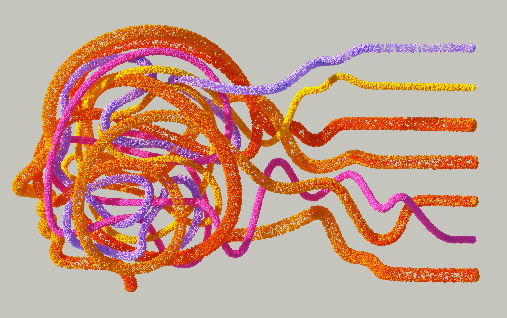

<!DOCTYPE html>
<html lang="en" dir="ltr">
<head>
    <meta charset="UTF-8">
    <meta name="viewport" content="width=device-width, initial-scale=1.0, minimum-scale=1.0, maximum-scale=5.0, viewport-fit=cover, shrink-to-fit=no">
    <meta http-equiv="x-ua-compatible" content="ie=edge"/>
    
    <title>Cronos</title>

    <!-- WEB TAB ICON -->
    <link rel="icon" type="image/png" href="thumbnails/top-1.png">

    <script src="header.js" defer></script>
    <script src="footer.js" defer></script> 

<style>
  @font-face { font-family:'Circular Std'; src:url('fonts/CircularStd-Book.woff2') format('woff2'),url('fonts/CircularStd-Book.woff') format('woff'); font-weight:400; font-style:normal; font-display:swap; }
  @font-face { font-family:'Circular Std'; src:url('fonts/CircularStd-BookItalic.woff2') format('woff2'),url('fonts/CircularStd-BookItalic.woff') format('woff'); font-weight:400; font-style:italic; font-display:swap; }
  @font-face { font-family:'Circular Std'; src:url('fonts/CircularStd-Medium.woff2') format('woff2'),url('fonts/CircularStd-Medium.woff') format('woff'); font-weight:500; font-style:normal; font-display:swap; }
  @font-face { font-family:'Circular Std'; src:url('fonts/CircularStd-Bold.woff2') format('woff2'),url('fonts/CircularStd-Bold.woff') format('woff'); font-weight:600; font-style:normal; font-display:swap; }
  @font-face { font-family:'S'; src:url('fonts/SoDoSans-Regular.ttf') format('woff2'),url('fonts/CircularStd-Black.woff') format('woff'); font-weight:900; font-style:normal; font-display:swap; }
   * {
  margin: 0;
  padding: 0;
  box-sizing: border-box;
  font-family: 'Circular Std', sans-serif;
}
</style>

</head>
<body>

  <cronos-header></cronos-header>
    
</body>
</html>


<style>
  /* Unique class prefix to avoid conflicts: tech-bold-launch- */
  .tech-bold-launch-container {
    position: relative;
    width: 100%;
    height: 100vh; /* Full viewport height for whole background effect */
    background: url('thumbnails/pexels-ayush-kumar-907951968-23466423.jpg') no-repeat center/cover; /* Replace with actual tech-themed image URL */
    overflow: hidden;
    font-family: 'Inter', sans-serif;
    color: #ffffff;
    display: flex;
    flex-direction: column;
    align-items: center;
    justify-content: center;
    text-align: center;
  }

  * {
    margin: 0;
    padding: 0;
  }

  /* Optional overlay for better text readability on background image */
  .tech-bold-launch-container::before {
    content: '';
    position: absolute;
    top: 0;
    left: 0;
    width: 100%;
    height: 100%;
    background: rgba(0, 0, 0, 0.5); /* Semi-transparent dark overlay */
    z-index: 0;
  }

  .tech-bold-launch-content {
    position: relative;
    z-index: 1;
    max-width: 800px;
  }

  .tech-bold-launch-title {
    font-size: 72px;
    font-weight: 400;
    line-height: 1;
    letter-spacing: -0.04em;
    margin-bottom: 52px;
  }

  .tech-bold-launch-buttons {
    display: flex;
    gap: 16px;
    justify-content: center;
  }

  .tech-bold-launch-button {
    background-color: #ffffff;
    color: #000000;
    border: none;
    border-radius: 24px;
    padding: 12px 24px;
    font-size: 17px;
    font-weight: 400;
    cursor: pointer;
  }

  .tech-bold-launch-button:hover {
    background-color: #f0f0f0;
  }

  .tech-bold-launch-button-ai {
    background-color: #1e3a8a;
    color: #ffffff;
  }

  .tech-bold-launch-button-ai:hover {
    background-color: #152e6e;
  }
</style>

<div class="tech-bold-launch-container">
  <div class="tech-bold-launch-content">
    <h1 class="tech-bold-launch-title">Innovate bold.<br>Launch fast.</h1>
    <div class="tech-bold-launch-buttons">
      <button class="tech-bold-launch-button">Start for Free</button>
      <button class="tech-bold-launch-button tech-bold-launch-button-ai">Start with AI</button>
    </div>
  </div>
</div>


<!DOCTYPE html>
<html lang="en">
<head>
    <meta charset="UTF-8">
    <meta name="viewport" content="width=device-width, initial-scale=1.0">
    <title>IT Technology Layout</title>

    <style>
        /* Namespace Prefix: .spec-tech- */
        
        .spec-tech-wrapper {
            box-sizing: border-box;
            font-family: 'Circular Std', sans-serif;
            background-color: #F8F9FB;
            
            /* FIX: Strict Width & Overflow Control */
            width: 100%;
            max-width: 100vw; /* Ensures it never exceeds viewport width */
            overflow-x: hidden; /* Cuts off any negative margin overflow */
            position: relative; /* Establishes a container context */
            
            margin: 0;
            padding: 200px 0;
            color: #111827;
        }

        /* FIX: Removed the global '* {}' selector that was breaking your other components */

        /* Scoped reset only for this component */
        .spec-tech-wrapper * {
            box-sizing: border-box;
            margin: 0;
            padding: 0;
        }

        /* Top Header */
        .spec-tech-header {
            text-align: center;
            max-width: 800px;
            margin: 0 auto 80px auto;
            padding: 0 20px;
            position: relative;
            z-index: 2;
        }

        .spec-tech-eyebrow {
            color: #0066FF;
            font-size: 14px;
            font-weight: 500;
            text-transform: uppercase;
            letter-spacing: 1px;
            display: block;
            margin-bottom: 15px;
        }

        .spec-tech-title {
            font-size: clamp(28px, 5vw, 42px);
            font-weight: 500;
            margin-bottom: 20px;
            letter-spacing: -0.02em;
            line-height: 1.2;
        }

        .spec-tech-subtitle {
            font-size: 18px;
            color: #64748b;
            line-height: 1.6;
        }

        /* Split Section */
        .spec-tech-split-container {
            display: grid;
            grid-template-columns: 1fr 1fr;
            align-items: center;
            gap: 60px;
            width: 100%;
        }

        /* Left Side: The Screen */
        .spec-tech-screen-box {
            position: relative;
            width: 100%;
            /* Kept the design choice, but overflow-x on wrapper now contains it safely */
            margin-left: -50px; 
            display: flex; /* Helps with alignment */
        }

        .spec-tech-screen-image {
            width: 100%;
            display: block;
            border-radius: 0 16px 16px 0;
            box-shadow: 20px 20px 60px rgba(0, 0, 0, 0.15);
            background-color: #1a1a1a;
            border: 10px solid rgba(0,0,0,0.1);
            object-fit: cover;
            /* Ensure image scales correctly */
            max-width: 100%;
            height: auto; 
        }

        /* Right Side: Footer Content */
        .spec-tech-footer-content {
            padding-right: 10%;
            max-width: 600px; /* Slightly increased for better breathing room */
        }

        .spec-tech-footer-title {
            font-size: 32px;
            font-weight: 500;
            letter-spacing: -0.02em;
            margin-bottom: 20px;
            line-height: 1.2;
        }

        .spec-tech-footer-desc {
            font-size: 18px;
            color: #64748b;
            line-height: 1.7;
        }

        /* Animations */
        .spec-tech-reveal {
            opacity: 0;
            transform: translateY(30px);
            transition: all 0.8s ease-out;
        }

        .spec-tech-visible {
            opacity: 1;
            transform: translateY(0);
        }

        /* Mobile Adjustments */
        @media (max-width: 900px) {
            .spec-tech-wrapper {
                padding: 100px 0;
            }
            
            .spec-tech-split-container {
                grid-template-columns: 1fr;
                gap: 50px;
            }

            .spec-tech-screen-box {
                margin-left: 0; /* Reset negative margin on mobile */
                padding-right: 20px; /* Add breathing room for the shadow */
            }
            
            .spec-tech-screen-image {
                /* Make it look like it's coming from left on mobile too, or full width */
                border-radius: 0 16px 16px 0;
                width: 95%; /* Pull back slightly so shadow doesn't clip */
            }

            .spec-tech-footer-content {
                padding: 0 20px;
                max-width: 100%;
            }
        }
    </style>
</head>
<body>

    <main class="spec-tech-wrapper">
        
        <header class="spec-tech-header spec-tech-reveal">
            <span class="spec-tech-eyebrow">Browser Extension</span>
            <h1 class="spec-tech-title">Two ways to access, yours to choose</h1>
            <p class="spec-tech-subtitle">
                Apart from the IT Hub console, you can manage cloud infrastructure 
                directly via our Chrome® extension — the choice is yours.
            </p>
        </header>

        <section class="spec-tech-split-container">
            
            <div class="spec-tech-screen-box spec-tech-reveal">
                
            </div>

            <div class="spec-tech-footer-content spec-tech-reveal">
                <h2 class="spec-tech-footer-title">Connect seamlessly</h2>
                <p class="spec-tech-footer-desc">
                    Easily connect your local environment or hardware security modules 
                    to access global IT projects, DevOps protocols, and secure APIs instantly.
                </p>
            </div>

        </section>

    </main>

    <script>
        document.addEventListener('DOMContentLoaded', () => {
            const observer = new IntersectionObserver((entries) => {
                entries.forEach(entry => {
                    if (entry.isIntersecting) {
                        entry.target.classList.add('spec-tech-visible');
                    }
                });
            }, { threshold: 0.1 });

            document.querySelectorAll('.spec-tech-reveal').forEach(el => observer.observe(el));
        });
    </script>

</body>
</html>


<!-- Custom Isolated Component: FAQ Section -->
<section class="it-faq-section">
  <div class="it-faq-container">
    <div class="it-faq-main-layout">
      
      <!-- Left Column: Heading -->
      <div class="it-faq-header">
        <h2 class="it-faq-title">Frequently Asked Questions</h2>
      </div>

      <!-- Right Column: Accordions & Contact Link -->
      <div class="it-faq-content">
        <div class="it-faq-accordion-group">
          
          <!-- Accordion Item 1 -->
          <div class="it-faq-item">
            <button class="it-faq-trigger" aria-expanded="false">
              <span class="it-faq-question">Who can participate in Enterprise Infrastructure & Cloud Services?</span>
              <span class="it-faq-icon">
                <svg viewBox="0 0 24 24" fill="none" stroke="currentColor" stroke-width="2" stroke-linecap="round" stroke-linejoin="round">
                  <line x1="12" y1="5" x2="12" y2="19"></line>
                  <line x1="5" y1="12" x2="19" y2="12"></line>
                </svg>
              </span>
            </button>
            <div class="it-faq-panel">
              <p class="it-faq-answer">
                Our services are designed for businesses of all sizes, from growing startups requiring custom web stacks to established enterprises needing dedicated cloud migrations and cybersecurity audits.
              </p>
            </div>
          </div>

          <!-- Accordion Item 2 -->
          <div class="it-faq-item">
            <button class="it-faq-trigger" aria-expanded="false">
              <span class="it-faq-question">What are the Service Level Agreements (SLAs) and deployment timelines?</span>
              <span class="it-faq-icon">
                <svg viewBox="0 0 24 24" fill="none" stroke="currentColor" stroke-width="2" stroke-linecap="round" stroke-linejoin="round">
                  <line x1="12" y1="5" x2="12" y2="19"></line>
                  <line x1="5" y1="12" x2="19" y2="12"></line>
                </svg>
              </span>
            </button>
            <div class="it-faq-panel">
              <p class="it-faq-answer">
                We guarantee up to 99.99% uptime for cloud infrastructure. Deployment schedules depend on project scope, with standard cloud setups completing in 2–5 business days.
              </p>
            </div>
          </div>

        </div>

        <!-- Contact Line -->
        <div class="it-faq-contact">
          <span>Have more questions?</span>
          <a href="#contact" class="it-faq-contact-link">Contact Us</a>
        </div>
      </div>

    </div>

    <!-- Divider Line & Disclaimer Footer -->
    <div class="it-faq-footer">
      <p>
        We respect your privacy and are committed to protecting your personal data. Please read our 
        <a href="#privacy" class="it-faq-bold-link">Privacy Notice</a> carefully before providing any information about you or any other person. Terms, conditions and eligibility apply for managed hosting & SLA agreements. Please refer to the <a href="#faq" class="it-faq-bold-link">FAQ</a> for details.
      </p>
    </div>
  </div>
</section>

<style>
  /* ==========================================================================
     ISOLATED COMPONENT STYLES (Prefix: it-faq-)
     ========================================================================== */

  .it-faq-section {
    width: 100%;
    background-color: #080f1e; /* Deep navy dark theme matching image */
    color: #ffffff;
    padding: 150px 20px 150px 20px;
    font-family: -apple-system, BlinkMacSystemFont, "Segoe UI", Roboto, Helvetica, Arial, sans-serif;
    box-sizing: border-box;
  }

  .it-faq-section * {
    box-sizing: border-box;
    margin: 0;
    padding: 0;
  }

  .it-faq-container {
    max-width: 1140px;
    margin: 0 auto;
  }

  /* Split Layout */
  .it-faq-main-layout {
    display: flex;
    gap: 60px;
    justify-content: space-between;
    align-items: flex-start;
    margin-bottom: 60px;
  }

  @media (max-width: 768px) {
    .it-faq-main-layout {
      flex-direction: column;
      gap: 32px;
    }
  }

  /* Left Header Column */
  .it-faq-header {
    flex: 1 1 40%;
  }

  .it-faq-title {
    font-size: 32px;
    font-weight: 500;
    letter-spacing: -0.5px;
    color: #ffffff;
    line-height: 1.2;
  }

  /* Right Content Column */
  .it-faq-content {
    flex: 1 1 60%;
    width: 100%;
  }

  .it-faq-accordion-group {
    border-top: 1px solid rgba(255, 255, 255, 0.12);
  }

  /* Individual Accordion Item */
  .it-faq-item {
    border-bottom: 1px solid rgba(255, 255, 255, 0.12);
  }

  .it-faq-trigger {
    width: 100%;
    background: none;
    border: none;
    outline: none;
    padding: 24px 0;
    display: flex;
    justify-content: space-between;
    align-items: center;
    cursor: pointer;
    text-align: left;
    color: #ffffff;
    transition: opacity 0.2s ease;
  }

  .it-faq-trigger:hover {
    opacity: 0.85;
  }

  .it-faq-question {
    font-size: 20px;
    font-weight: 500;
    line-height: 1.4;
    padding-right: 20px;
  }

  .it-faq-icon {
    width: 20px;
    height: 20px;
    display: flex;
    align-items: center;
    justify-content: center;
    flex-shrink: 0;
    transition: transform 0.3s ease;
  }

  .it-faq-icon svg {
    width: 20px;
    height: 20px;
    stroke: #ffffff;
  }

  /* Rotate icon when active */
  .it-faq-trigger[aria-expanded="true"] .it-faq-icon {
    transform: rotate(45deg);
  }

  /* Expandable Content Panel */
  .it-faq-panel {
    max-height: 0;
    overflow: hidden;
    transition: max-height 0.3s cubic-bezier(0, 1, 0, 1), padding 0.3s ease;
  }

  .it-faq-trigger[aria-expanded="true"] + .it-faq-panel {
    max-height: 500px;
    padding-bottom: 24px;
    transition: max-height 0.3s ease-in-out, padding 0.3s ease;
  }

  .it-faq-answer {
    font-size: 16px;
    color: #94a3b8;
    line-height: 1.6;
  }

  /* Direct Contact Line */
  .it-faq-contact {
    margin-top: 36px;
    font-size: 16px;
    color: #ffffff;
    font-weight: 500;
  }

  .it-faq-contact-link {
    color: #258feb; /* Vibrant electric blue matching reference */
    text-decoration: none;
    margin-left: 6px;
    transition: color 0.2s ease;
  }

  .it-faq-contact-link:hover {
    color: #0582ff;
    text-decoration: underline;
  }

  /* Footer Disclaimer Section */
  .it-faq-footer {
    border-top: 1px solid rgba(255, 255, 255, 0.08);
    padding-top: 32px;
  }

  .it-faq-footer p {
    font-size: 14px;
    color: #64748b;
    line-height: 1.6;
  }

  .it-faq-bold-link {
    color: #ffffff;
    font-weight: 500;
    text-decoration: none;
  }

  .it-faq-bold-link:hover {
    text-decoration: underline;
  }
</style>

<script>
  /* Isolated JavaScript for Accordion Interactivity */
  document.addEventListener('DOMContentLoaded', () => {
    const faqTriggers = document.querySelectorAll('.it-faq-trigger');

    faqTriggers.forEach(trigger => {
      trigger.addEventListener('click', () => {
        const isExpanded = trigger.getAttribute('aria-expanded') === 'true';
        
        // Close all items for single-open accordions (optional, but clean)
        faqTriggers.forEach(otherTrigger => {
          otherTrigger.setAttribute('aria-expanded', 'false');
        });

        // Toggle state of clicked trigger
        if (!isExpanded) {
          trigger.setAttribute('aria-expanded', 'true');
        }
      });
    });
  });
</script>


<cronos-footer></cronos-footer>